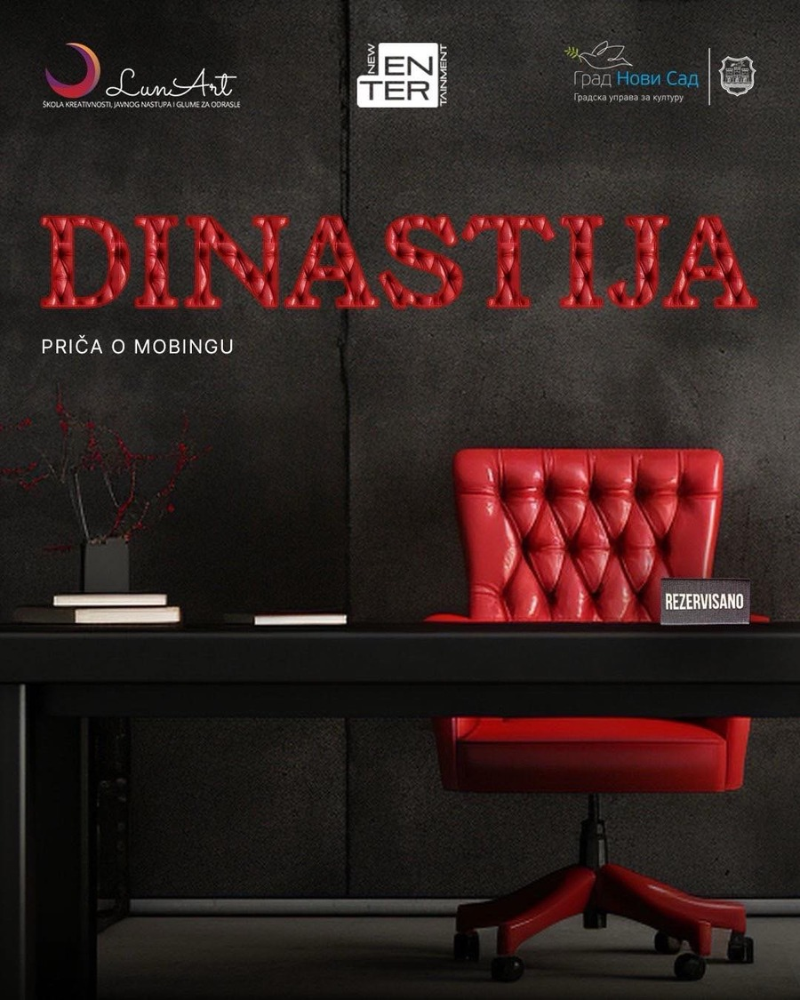

Dinastija
22. oktobra u 20.30 h, u okviru Festivala Isadora Dankan, publika je imala priliku da pogleda predstavu „Dinastija” u Novosadskom pozorištu, Jovana Subotića 3–5.
Predstava je nastala kroz rad sa grupom odraslih glumaca amatera po metodama Teatra potlačenih i Forum teatra. Na autentičan i angažovan način otvara temu mobinga, odnosno zloupotrebe moći u radnom okruženju.
Publika, osim što gleda, ima priliku da aktivno učestvuje u scenskoj diskusiji i zajedno sa glumcima traga za mogućim rešenjima.